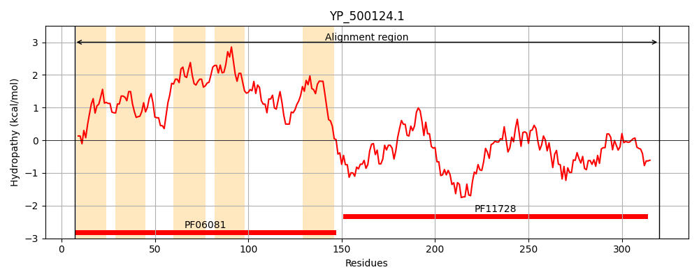
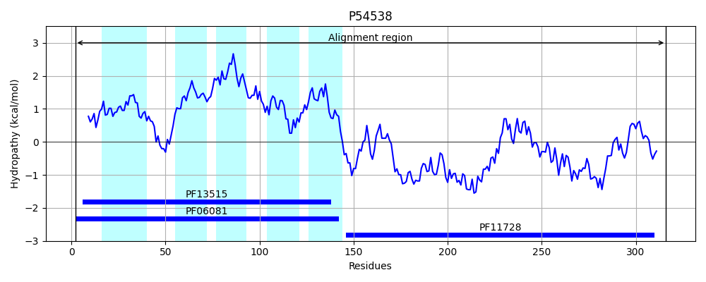
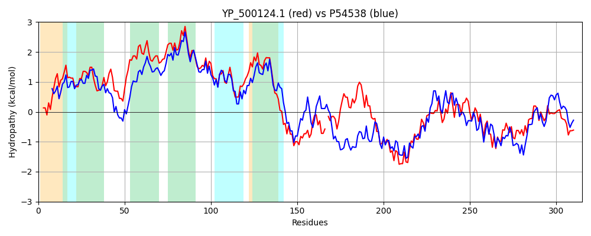

Hit Accession: P54538
Hit TCID: 2.A.85.4.4
Hit Description: gnl|BL_ORD_ID|10945 gnl|TC-DB|P54538|2.A.85.4.4 Hypothetical protein yqjA - Bacillus subtilis.
Mach Len: 315
e:0.000000
Query TMS Count : 5
Hit TMS Count: 5
TMS-Overlap Score: 3.600000
Predicted Substrates:None
BLAST Alignment:
Score: 607 , Bit scores: 238 bits, E-value: 4.9e-77, Alignment length: 315, Percentage identity: 40
Query: 7 YKIGFRTIKTAVGMTLGVIISKLLGLDNYASSAILVVLCIKHTKVHSLQAIISRLVSCFLVLFLGSAIFSLLGQSPIVLGIIVLLFIPLTVVLKVQEGVITSCVILLHVFNAKSIDAHLIVNETLLLLIGLSIAFTMNLMMPSLDKQLDEYKCKIEQQIADIFSKYS-YICEKYEDTIAIEFEVLLLNIKKAKSIAFRDVKNHFVRNENSYYHYFDMREEQVELLMRMKPLIESICHKDPLLNDVASLLKEIGLNVNSNDYTAMRLHNLYETRLKLDELPLPTTHKALNSRASIIQILNELEEYLQIKSQFGSLK 320
+KIG+RTIKTA+G L + IS+LL L N+AS+ I+ +LCI+ T+ SLQA +R +C L + F L+G P V+G ++L+FIP+TV+LK+ EG++TS VI+LH++ + I I NE L+ +G+ +A MNL MPSLD++L Y+ KIE A IF++ Y+ +D E I +AK++A+RDV+NH +R EN +YHYF MRE+Q E++ R+ P + SI +A + ++ ++ + L L + R + +E+PLP T + +RA++ +L E+E+YL IKS F +K
Sbjct: 2 FKIGYRTIKTALGTALAIYISQLLHLQNFASAGIITILCIQITQKRSLQASWARFSACCLAIAFSYLFFELIGYHPFVIGALLLIFIPITVLLKINEGIVTSSVIILHLYMSGGITPTFIWNEVQLITVGIGVALLMNLYMPSLDRKLIAYRKKIEDNFAVIFAEIERYLLTGEQDWSGKEIPETHQLITEAKNLAYRDVQNHILRYENLHYHYFKMREKQFEIIERLLPKVTSISITVDQGKMIAEFIHDLREAIHPGNTAYKFLKRLADMRKEFEEMPLPATREEFEARAALFHLLGEMEQYLVIKSYFKGIK 316 | Protein Hydropathy Plots: |
|---|
|  |  |
Pairwise Alignment-Hydropathy Plot:
|
|---|
|  |